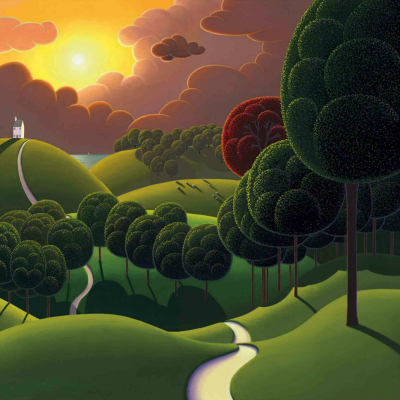

Otwór jaskini był znany od dawna góralom. Pierwszymi grotołazami, którzy weszli do jaskini, byli Jan Danysz i Jacek Kibiński z STJ KW Kraków (14.09.1960).W ciągu kilku dni dotarli wraz z J. Zaorską i B. Łazarską do Ślepej Kiszki (tzw. Stare Dno). Ważnym wydarzeniem była wspinaczka zespołu KKTJ z dna I-szej studni, w wyniku której osiągnięto przewyższenie +24,5 m.

W 1982 r. K. Dudziński ze Speleoklubu Tatrzańskiego odkrył meander rozpoczynający się w oknie I-szej studni. Od 1986 r. jaskinię eksplorowali członkowie Speleoklubu Warszawskiego. Rozebrali wantowisko na dnie II studni i odkryli 47 m. Studnię Kandydata. W ciągu kolejnych biwaków wyeksplorowali nowe partie dochodząc do obecnego dna w Piaskownicy. Problem Marmurowej jest powszechnie znany, rokuje się, że ma szansę rozwinąć się w pokaźną jaskinię. Nic więc dziwnego, że perspektywy te nie pozwalają spać po nocach jej głównemu eksploratorowi - T. K. Pryjmie. Fascynujący jednak jest fakt (godny rekordu Guinessa), że potrafi on wstrzymywać się od snu już blisko dziesięć lat.